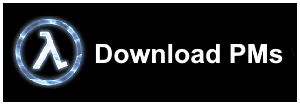

Sven Co-op is a multiplayer mod for Half-Life that allows anyone to play Half-Life co-operatively with up to 32 people!
The game first released in January of 1999, only a few months after the release of Half-Life, and has been actively updated and maintained since, even releasing as a standalone mod on the Steam storefront in 2017.
The game allows you to play the official expansions (provided they are in your steam library and are installed) as well as mod campaigns such as They Hunger. The game has an active community of map-makers making custom maps and co-op experiences and also ports of other mod campaigns. Sven Co-op also has a modding community that creates custom skins and playermodels for the game.
Throughout my time playing Sven Co-op, I had made several playermodels for the game.
In my persuit of making Sven Co-op playermodels easier and better in general, I created my own set of tools all unified in one program that can allow many things to be done that would usually be tedious, laborious or just straight up impossible. It also allows scripting for extra automation. A link to the Github Repo is provided here: